Zonecraft Structure FREE Indicator v2.3
Draws swing market structure (BOS / CHoCH) and fair value gaps with their fill level, plus a small dashboard. Calculated from closed candles only.
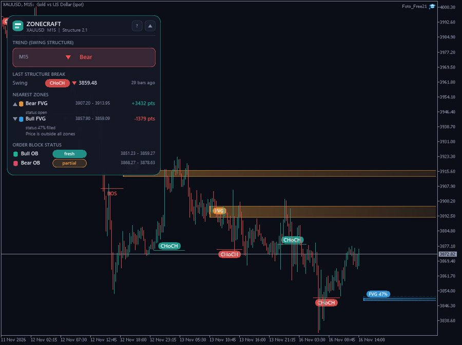
What's new · v2.2Small one-time thank-you line in the Journal (can be turned off). No change to the functions.
Watch releases on GitHub to get updates PRO Pro version: Zonecraft SMC Suite – more features → MQL5 Market ▶ Pro version in action (7 s)
Sweepwell One FREE Indicator v1.03
Marks resting liquidity (equal highs / lows, previous day high / low) and shows when it is swept, with a strength of 1 to 3 dots.
What's new · v1.02Removed artificial limits: the note card about another edition is gone; everything shown is fully usable.
Watch releases on GitHub to get updates PRO Pro version: Sweepwell ICT Liquidity Suite – more features → MQL5 Market ▶ Pro version in action (7 s)
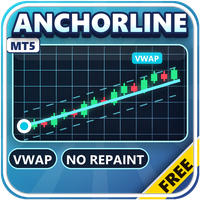
Anchorline One FREE Indicator v1.03
One anchored VWAP with a ±1 standard deviation band. Anchor it to the start of the day, week, month or the last swing high / low.
What's new · v1.02Removed artificial limits: the note card about other features is gone from the panel.
Watch releases on GitHub to get updates PRO Pro version: Anchorline Anchored VWAP – more features → MQL5 Market ▶ Pro version in action (7 s)
Tideline Core FREE Indicator v1.02
Currency strength of the 8 major currencies from the 28 major and cross pairs, with an open formula and a ranking panel.
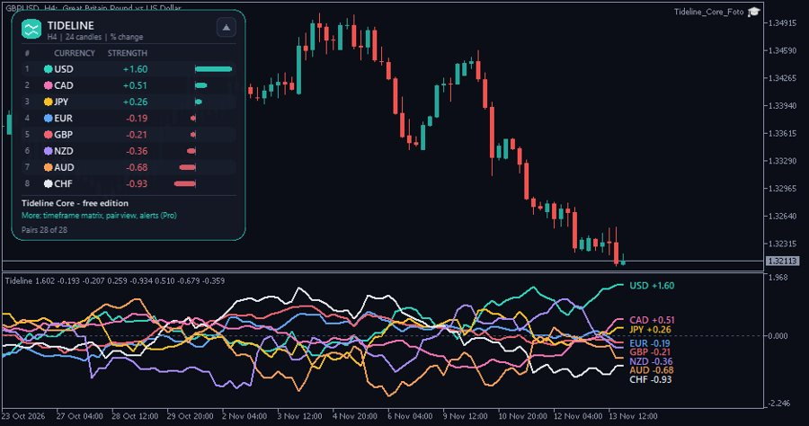
What's new · v1.02Removed artificial limits: the panel header no longer shows a teaser for features that are not included.
Watch releases on GitHub to get updates PRO Pro version: Tideline Currency Strength – more features → MQL5 Market ▶ Pro version in action (7 s)
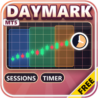
Daymark Session Timer FREE Indicator v1.11
Candle-close countdown, the Sydney / Tokyo / London / New York sessions as soft boxes and the previous day high and low in one light indicator.
What's new · v1.11Small one-time thank-you line in the Journal (can be turned off). No change to the functions.
Watch releases on GitHub to get updates PRO Pro version: Daymark Chart Companion – more features → MQL5 Market ▶ Pro version in action (7 s)
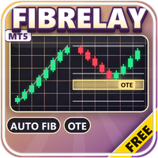
Fibrelay One FREE Indicator v1.00
Draws the Fibonacci of the last impulse wave automatically after every break of structure, including the OTE zone and the 50 % line.
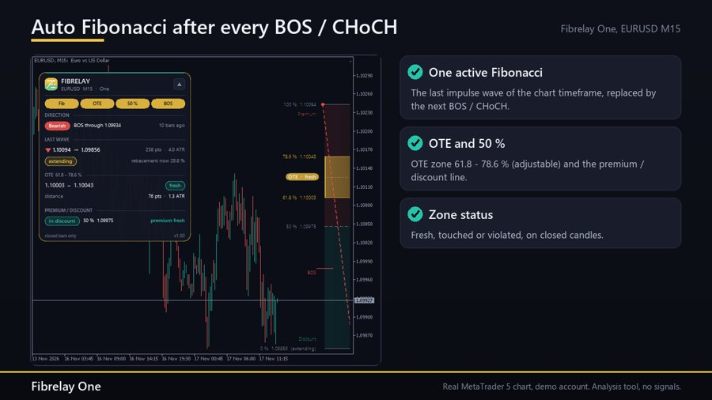
What's new · v1.00First release.
Watch releases on GitHub to get updates PRO Pro version: Fibrelay OTE Fibonacci – more features → MQL5 Market ▶ Pro version in action (7 s)
Scoutmark One FREE Indicator v1.02
Shows the smart money structure of up to 30 symbols on H1 and H4 in one small table: last swing break, nearby FVG and order blocks.
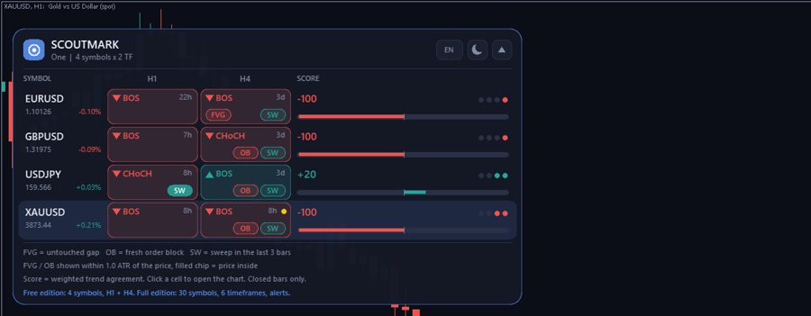
What's new · v1.02Symbol list freely selectable (up to 30 symbols, shown in pages) instead of a fixed maximum of 4.
Watch releases on GitHub to get updates PRO Pro version: Scoutmark SMC Scanner – more features → MQL5 Market ▶ Pro version in action (7 s)
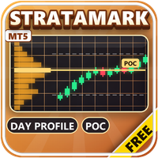
Stratamark One FREE Indicator v1.00
Daily volume profile next to the candles for the last 1–5 days: point of control, value area high / low and a gradient histogram.
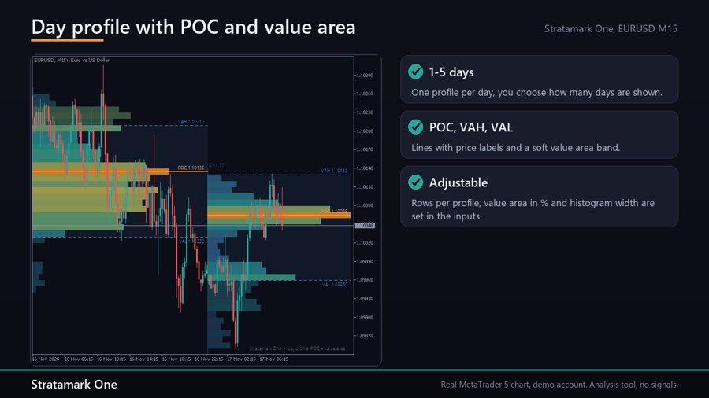
What's new · v1.00First release: day volume profile with POC and value area, 1-5 days.
Watch releases on GitHub to get updates PRO Pro version: Stratamark Volume Profile – more features → MQL5 Market ▶ Pro version in action (7 s)
Fleetdeck Account Overview FREE EA · read only v1.02
All MT5 accounts on your computer in one panel: equity, profit of day and week, open profit and a traffic light per account. Read only, never trades.
What's new · v1.02All accounts are shown instead of only 3; the footer hint is gone.
Watch releases on GitHub to get updates PRO Pro version: Fleetdeck Multi Account Monitor – more features → MQL5 Market ▶ Pro version in action (7 s)
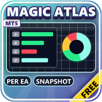
Magic Atlas Snapshot FREE EA · read only v1.02
Reads the closed positions of your account and shows net profit, win rate, profit factor, drawdown and expectancy for each EA (magic number).
What's new · v1.02All EAs (magic numbers) are analysed instead of only 3; greyed-out tabs and the locked CSV button are gone.
Watch releases on GitHub to get updates PRO Pro version: Magic Atlas Journal – more features → MQL5 Market ▶ Pro version in action (7 s)
Pilotdeck One FREE EA · manual trading v1.02
Risk calculator and one-click trade panel: drag Entry, SL and TP lines, see lot size, money, percent and R:R live, then send the order with one click.
What's new · v1.02The promotional card at the bottom of the panel is gone; all buttons shown are fully usable.
Watch releases on GitHub to get updates PRO Pro version: Pilotdeck Trade Manager – more features → MQL5 Market ▶ Pro version in action (7 s)
Relaywire Notify FREE EA · notifications v1.02
Sends the trade events of your account (opened, closed, partial close, SL / TP changes) to your own Telegram chat through your own bot. Reports only.
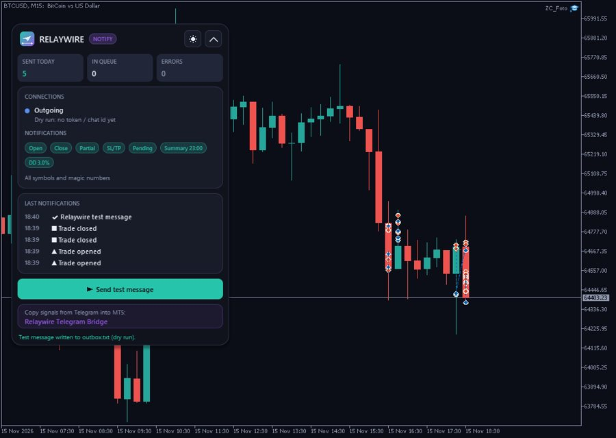
What's new · v1.02The promotional card in the panel is gone.
Watch releases on GitHub to get updates PRO Pro version: Relaywire Telegram Bridge – more features → MQL5 Market ▶ Pro version in action (7 s)
Rewindeck One FREE EA · Strategy Tester v1.12
Practise manual trading in the visual Strategy Tester: pause the replay, set your lines with a click and press Buy or Sell.
What's new · v1.12The promotional card at the bottom of the panel is gone; all buttons shown are fully usable.
Watch releases on GitHub to get updates PRO Pro version: Rewindeck Backtest Simulator – more features → MQL5 Market ▶ Pro version in action (7 s)
Twinlane Copier One FREE EA · copier v2.02
Copies positions from one MT5 terminal to one other terminal on the same PC or VPS. No DLL, no web request, no passwords, no time limit.
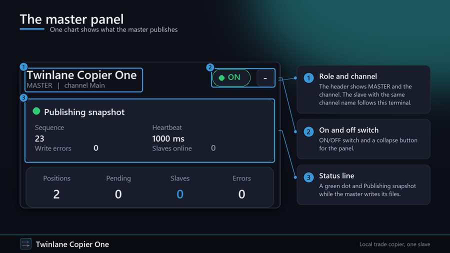
What's new · v2.02No more greyed-out controls with PRO tags; only what works is shown (lot factor, pause, disconnect all, log).
Watch releases on GitHub to get updates PRO Pro version: Twinlane Copier – more features → MQL5 Market ▶ Pro version in action (7 s)